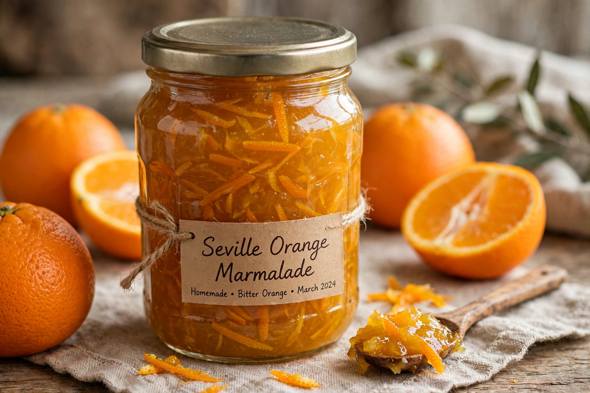

Wikipedia — the free encyclopedia

Marmalade is a fruit preserve made from the juice and peel of citrus fruits boiled with sugar and water. The best-known variety is made from Seville (bitter) oranges, whose high pectin content gives a firm set and whose peel provides the characteristic bitter-sweet flavour. The word derives from the Portuguese marmelada, quince paste.
A popular legend credits Janet Keiller of Dundee, Scotland, with inventing marmalade in the 18th century when her husband bought a cheap cargo of storm-delayed Seville oranges. Marmalade became a hallmark of the British breakfast, and Dundee remains associated with it.
Making marmalade involves simmering shredded peel to soften it and extract pectin, then boiling with sugar to the setting point. Varieties include thick-cut and thin-cut peel, and marmalades made from lemons, limes, grapefruit and other citrus.